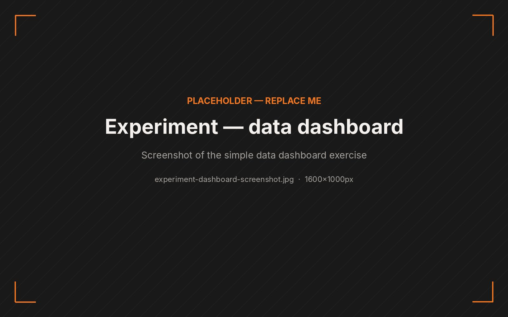
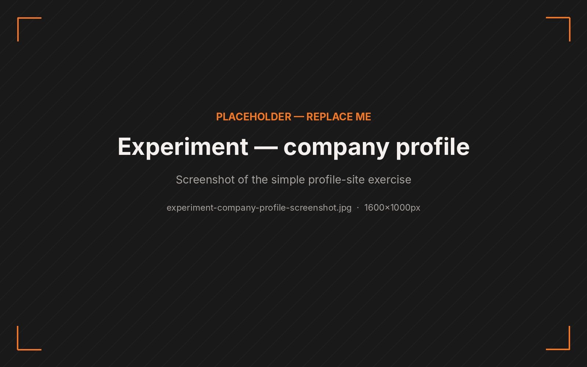

Learning several tools at once
PHP, Blade, Livewire, Alpine.js and Chart.js each have their own model. Trying them in small, separate experiments keeps the learning manageable.
Case study 03Experimental · Collection
A collection of small practice builds made while learning front-end development, PHP and Laravel fundamentals. Everything here is exploratory — none of it is presented as a finished product.

01Overview
These are the exercises and experiments from my learning path: a volleyball booking site, a simple data dashboard, a company-profile page and a booking form. They exist to practise techniques, not to ship products.
Each item is labelled Experimental or Practice, following how they were described in Portfolio V1.
02Problem
Ideas like forms, data display and responsive layout only stick once I build with them. Reading about a technique is not the same as getting it to work in a page.
03Solution
Small, self-contained experiments are a low-risk way to try a technique before using it in a larger project. Each one targets a single skill and is kept small enough to finish and learn from.
04Main features
A volleyball facility booking website built with PHP Native. Visitors can see schedules, choose a time and submit a reservation. A screenshot of the original build appears in the gallery.
A practice page for presenting simple data in a clean, readable layout.
A practice layout with several information sections and responsive design for different screen sizes.
A practice form with basic validation using HTML, CSS, JavaScript and PHP.
05Technology stack
06Screenshot gallery


07Development challenges
PHP, Blade, Livewire, Alpine.js and Chart.js each have their own model. Trying them in small, separate experiments keeps the learning manageable.
It is tempting to keep adding features. An experiment is finished when it has taught what it was meant to teach.
Laravel and its ecosystem are something I'm still learning step by step, so these builds are deliberately labelled as practice.
08Lessons learned
A one-skill experiment gives quick feedback and is easy to throw away or grow into something larger.
Calling something experimental or practice sets honest expectations and removes the pressure to pretend it is finished.
Booking flows, forms and dashboards are building blocks that larger projects such as LapanganKu also rely on.